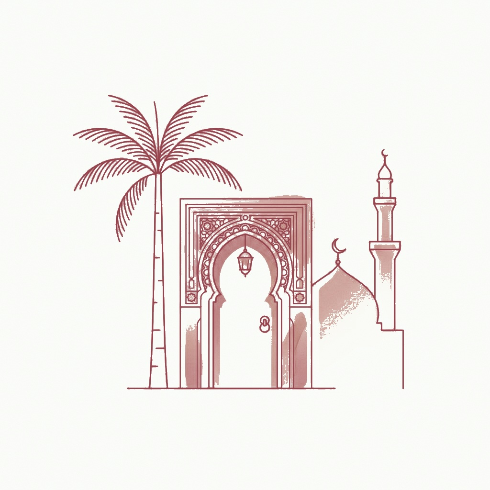
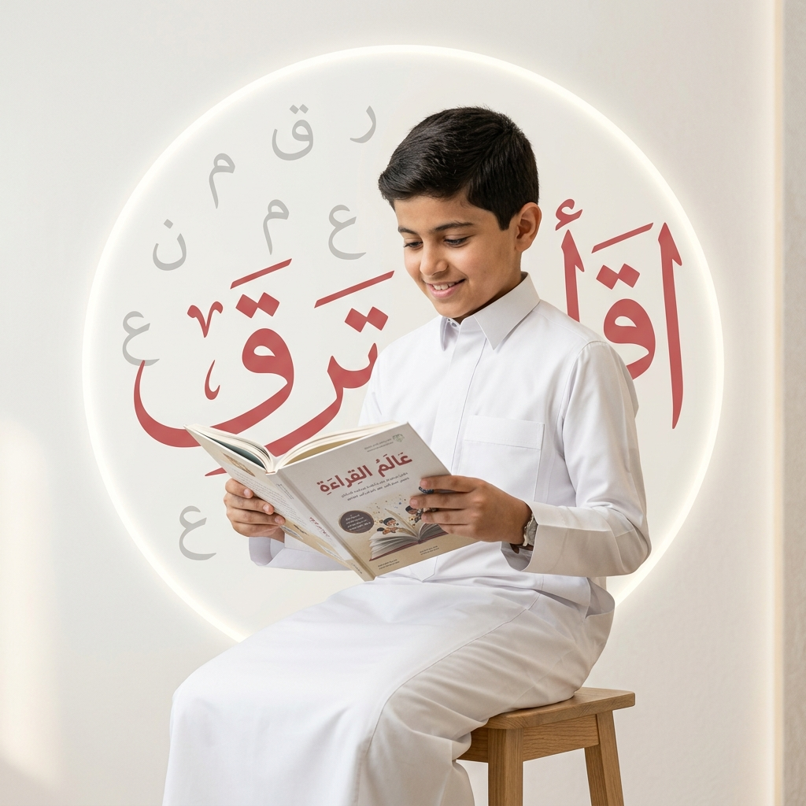
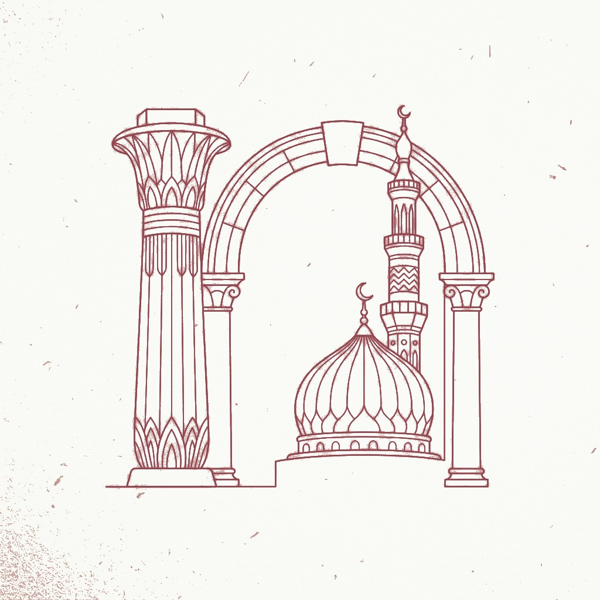
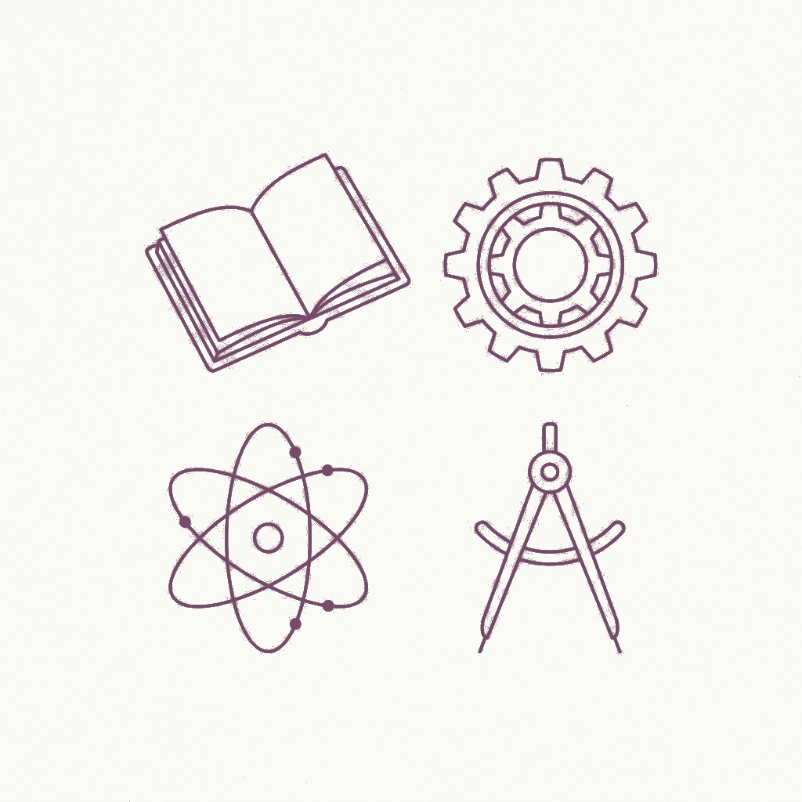
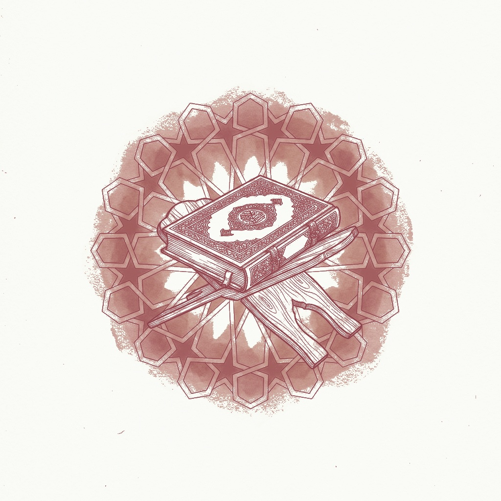
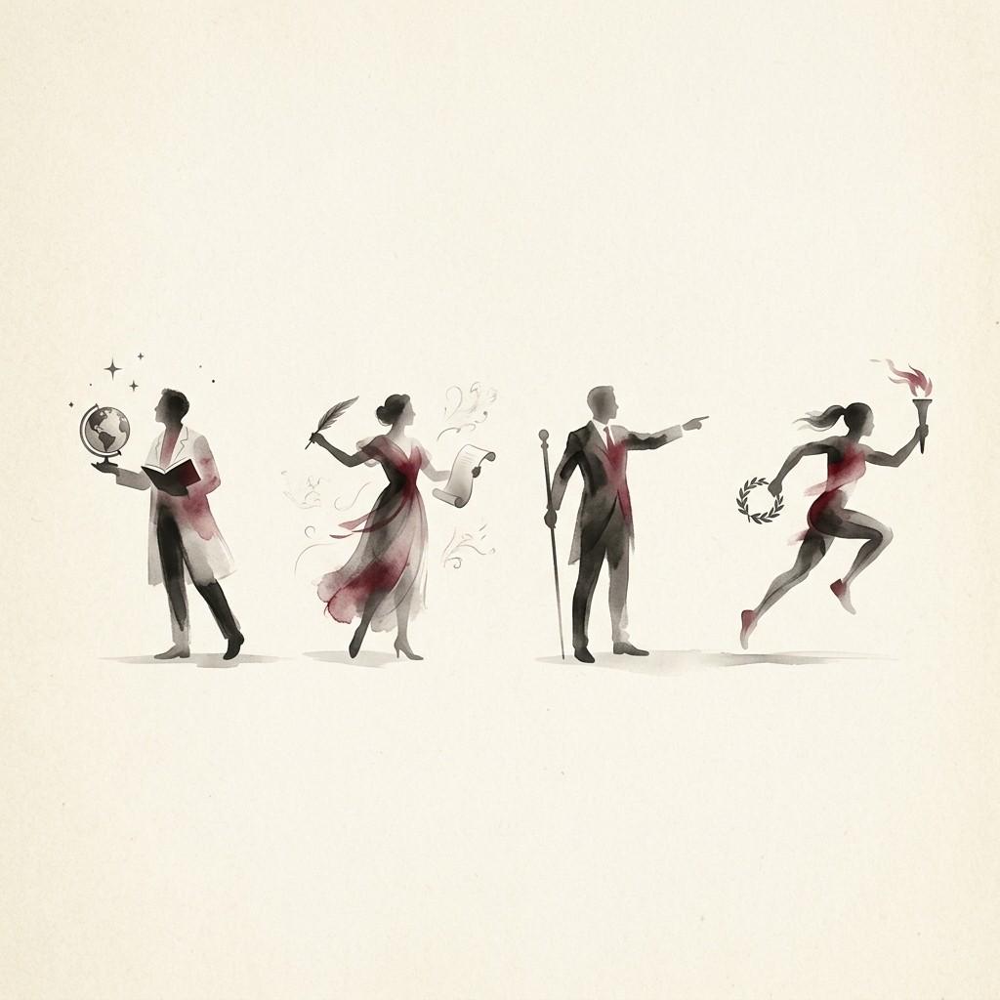

Local
Connects learners to their local and regional heritage, customs, arts, and literature.
Bayan Arabic Literacy Platform, a progressive journey across six levels that builds the thinking reader, not just the speaker, with content that connects learners to their identity and world.
Integrated Methodology
Peer-reviewed by experts
Rich & graded content
Analyzing comprehension

Many master the pronunciation of words,
but few reach their meaning.
Bayan exists to bridge this gap for the learner.
Many learners can read and pronounce words correctly, yet struggle to understand, analyze, and extract meaning from texts. This gap does not affect Arabic language learning only; it extends to every subject taught through Arabic.
“Reading is necessary; literacy is the outcome.”
Every topic is explored through four integrated axes, transforming reading from a skill into a window onto knowledge and cultural identity.

Connects learners to their local and regional heritage, customs, arts, and literature.

A window into great historical eras: Arab-Islamic, Pharaonic, Roman, Greek, Chinese, and Indian civilizations.

Organized knowledge across two fields: Science & Technology (STEM) and Humanities & Arts (HASS).

Connects learners to authentic Islamic references (Quran, Hadith, Jurisprudence, Biography) under strict standards.
Progression in Bayan encompasses text length, conceptual depth, vocabulary density, style variety, and vocalization coverage.
Narrative · Full Vocalization
Students read and interact, teachers assign and track progress, while administrators and ministries monitor high-level performance.
A ready-to-use progressive reading curriculum that boosts results and integrates with yours.
Read More →A scalable, standardized solution customized to national stages and aligned with criteria.
Read More →Ready-made content and auto-grading, allowing teachers to focus on guiding comprehension.
Read More →A reading journey matched to their exact level, with engaging texts and inspiring figures.
Read More →"We preserve the text as it was written,
and build the comprehension as desired."
Request a demo, and our team will get in touch to assess your needs and prepare a customized experience.
